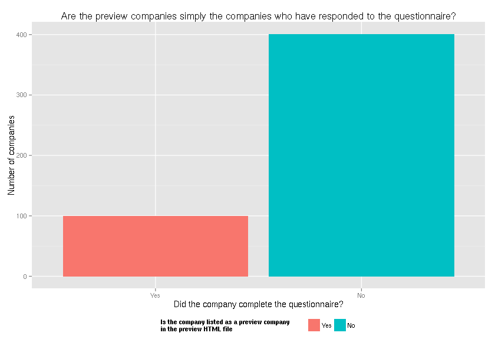

A data dictionary of the Open Data 500 data
The Open Data 500 is “the first comprehensive study of U.S. companies using open government data to develop new products and services.” You may have read about it in. Forbes, Information Week, or Fedscoop This is data about open data, so I naturally wanted it.
The Open Data 500 Team doesn’t provide a data dictionary, so I pieced one together for my own purposes. And I figured somebody else might want it for her own purposes, so here it is. The present article discusses
- What the Open Data 500 is, in terms of research methods
- How the released data files are structured
- Clarification of some possible points of confusion
- Recommendations as to how to work with the data
Data collection methods
The Open Data 500 looks a bit scary and complicated when you read its website and the articles about it, but the Open Data 500 is pretty much just a straightforward questionnaire survey.
The population of interest
The Open Data 500 Team is interested in companies that meet their eligibility criteria, which they describe as follows.
- Be U.S.-based – which can include international companies with a major presence in the U.S.
- Earn revenue from its products and services. In addition to for-profit companies, nonprofits may qualify if they support themselves primarily through sales of products and services rather than philanthropy.
- Use open government data as a critical resource for its business. (While most Open Data 500 companies will work with federal data, the study will also include some that use city or state data if their work can scale regionally or nationally)
The Open Data 500 site does not explain how they operationalize these criteria, but I presume that it works as follows.
- The questionnaire must indicate that a company has a major presence in the U.S.
- The answer to “Which of the following are significant sources of revenue for your company?” must include something other than “Philanthropy”.
- The answer to “Which of the following are critical sources of data for your company?” must include “Federal Open Data”, the questionnaire must indicate elsewhere that the company is using state or city data from a range of states or cities.
They are “vetting” companies, but this sounds like just a conversation with the submitters to check that they understood the questionnaire properly.
Comprehensive call sampling strategy
The Open Data 500 uses a sampling strategy that they term “comprehensive call”. That sounds really complicated, but it’s actually quite simple.
The questionnaire results can be considered a convenience sample convenience sample of companies that meet the Open Data 500 eligibility criteria.
The Open Data 500 Team distributed links to the questionnaire in these places.
- Recommendations from government and non-governmental organizations studying this field.
- List of companies using datasets from Data.gov, the federal hub for government data
- Online Open Data Userbase created by Socrata
- Directory of open data companies developed by Deloitte
- Mass email to 3100 people in the GovLab network
- Mass email to 2200 people on contact list for OpenDataNow.com, website of Open Data 500 project director Joel Gurin
- Companies identified in research for upcoming book, Open Data Now
- Response to coverage of the Open Data 500 in Information Week and FedScoop
- Outreach through Twitter
- Outreach at “Data Transparency 2013” conference (September 2013, Washington, DC)
- Blog posts on TheGovLab.org and OpenDataNow.com
That’s all that “comprehensive call” means!
I think their use of comprehensive call is why the Open Data 500 Team considers the Open Data 500 to be a comprehensive study.
Undocumented data collection
Open Data 500 Team solicited responses to this questionnaire through comprehensive call, but they also looked for companies that did not respond to the questionnaire.
I couldn’t find any documentation about the process they went through for collecting data without the questionnaire. After talking to one of the Team members, I think that the Team collected data about these companies without talking directly to anyone who works there, but I do not know how they chose the companies nor how they collected the data.
Case study
In both the questionnaire section of the study and in the undocumented data collection, only companies that meet the eligibility criteria are considered. Thus, the Open Data 500 is a case study of companies that meet the Open Data 500 eligibility criteria; there is not a control group of companies that do not meet the criteria.
Just a questionnaire
This is the main thing that confused me about the study, so I’m going to explain this part in a bit more depth in case anyone else was also confused.
Aside from the undocumented data collection, which produces only coarse information, the data collection for the Open Data 500 is just the questionnaire. Really. For example, the Team isn’t looking at companies products to see which open data are used, and it isn’t looking at annual reports to determine whether the company does a lot of business in the United States. This is confusing because the data releases do not look like the questionnaire, but I’m pretty sure that the data come rather directly from the questionnaire.
Sample size
It is unclear to me how many companies responded to the questionnaire, but I think it is either 51 companies or 100 companies. I explain this more in the Which companies are in the preview? section.
Pre-launch
According to the “About” page on the Open Data 500 site, the Open Data 500 “will identify, describe, and analyze companies that use open government data in their businesses.”
As I understand it, the analysis component of this has yet to occur. At the moment, the Open Data 500 is in “pre-launch”. This means that they have begun to collect data but that they haven’t done any sort of analysis on it. (This part isn’t explained on the website, but a member of the Open Data 500 Team explained this to me in person.)
Data files
The Open Data 500 Team has released six main data files.
Preview50_Companies.csv500_Companies.csvOD500_Companies.jsonOD500_Datasets.jsonpreview(HTML)candidates(HTML)
There are also individual pages about each company, but I’m pretty sure that the only extra information on those is comments submitted through the comment forms.
Preview50_Companies.csv
Preview50_Companies.csv
is a denormalized CSV file with
25 columns and 102 rows.
Each row corresponds to a dataset within a company, and
each column corresponds to a question from the
questionnaire.
51 different companies are
represented in this dataset.
The column names in this file correspond quite closely to the name attributes in the HTML form source code for the questionnaire.
These columns describe the companies, and they are identical across different rows about the same company.
| Code in the file | Question from the questionnaire |
|---|---|
CompanyName |
Name of your company |
URL |
Company URL |
city |
In which city is this company located? |
STATE |
State [1] |
abbrev |
State [1] |
zipCode |
Zip Code |
ceoFirstName |
First Name of CEO |
ceoLastName |
Last Name of CEO |
companyPreviousName |
??? |
yearFounded |
Founding Year |
FTE |
Number of FTE’s [2] |
companyType |
Type of Company (Data management and analysis, Nonprofit, Private, Public) [3] |
companyCategory |
What category best describes your company? (Business & Legal Services, Data/Technology, Education, Energy, Environment & Weather, Finance & Investment, Food & Agriculture, Geospatial/Mapping, Governance, Healthcare, Housing/Real Estate, Lifestyle & Consumer, Scientific Research) [1] |
companyFunction |
Which best describes the function of your company? (many different levels) [3] |
sectors |
What category best describes your company? (many different levels) [1,3] |
revenueSource |
Which of the following are significant sources of revenue for your company? [4] |
descriptionLong |
Please give us a short public statement describing your company’s mission and work. You can take this material from your website or other publications if you choose to. |
descriptionShort |
As a summary, please provide a one sentence description of your company. |
socialImpact |
Besides revenue generation, how do you measure the impact your company has for society and the public good? |
financialInfo |
Please include any financial or operational information that will help us understand your company. We are interested in specific information like past and projected annual revenues, total outside investment dollars to date, and significant investors or partners. |
criticalDataTypes |
Which of the following are critical sources of data for your company? By “critical,” we mean that your company would have to shut down a line of business, shut down completely, or replace the data in some way if the data were no longer available. |
It does not include the following questions from that first page of the questionnaire.
| Code from the web form | Question from the questionnaire |
|---|---|
firstName |
First Name [5] |
lastName |
Last Name |
title |
Title |
email |
|
phone |
Phone |
contacted |
Please check here if you would be willing to be contacted for further information about your company. |
datasetWishList |
What datasets (if any) are not currently available that would be useful for your company to have as government open data? |
companyRec |
What other companies, either in your sector or other sectors, would you recommend we contact regarding their use of government open data? |
conferenceRec |
What conferences or events do you think would be helpful to us in surveying the field of open data companies? |
The following columns come from the “New Dataset” page of the questionnaire.
| Code in the file | Question from the questionnaire |
|---|---|
datasetName |
Name of Dataset |
datasetURL |
URL of Dataset |
agencyOrDatasetSource |
Agency or Source |
The file does not include the following columns from the “New Dataset” page.
| Code from the web form | Question from the questionnaire |
|---|---|
typeOfDataset |
Type of Dataset (Federal Open Data, State Open Data, City/Local Open Data, Other) |
rating |
On a scale of 1 to 4, how would you rate the usefulness of this dataset? (1- poor, 4- excellent) Your answer can reflect your experience with data quality, format of the data, or other factors. |
reason |
Why did you give it this rating? |
Finally, there is also a DATASETS column, which is the number of datasets
submitted for the particular the company.
You can think of this file as a CSV version of OD500_Companies.json.
Notes:
- In some cases, answers to one question are presented redundantly across multiple columns.
- “FTE” probably stands for “full-time equivalent employees”.
- The questionnaire has different categories from the levels reported in this file.
- This cell contains a comma-and-space (
,) delimited list of items, and I haven’t picked apart the lists to find all of the possible values in the list. - This is from the “Personal Information” section, which presumably describes the person who is filling out the questionnaire.
500_Companies.csv
500_Companies.csv
is a CSV file with
7 columns and 503 rows.
Each row corresponds to a unique company, and
each column corresponds to a question from the
questionnaire.
| Code in the file | Question from the questionnaire |
|---|---|
CompanyName |
Name of your company |
URL |
Company URL |
city |
In which city is this company located? |
STATE |
State |
abbrev |
State |
zipCode |
Zip Code |
companyCategory |
What category best describes your company? (Business & Legal Services, Data/Technology, Education, Energy, Environment & Weather, Finance & Investment, Food & Agriculture, Geospatial/Mapping, Governance, Healthcare, Housing/Real Estate, Lifestyle & Consumer, Scientific Research) |
descriptionShort |
As a summary, please provide a one sentence description of your company. |
This file provides no data about datasets used by the companies.
Recall that the study includes both questionnaire data and data collected by undocumented means. This file contains data collected by both methods.
OD500_Companies.json
OD500_Companies.json
is a JSON file with an array of associative arrays (that is, a list of mappings).
It has 51 rows (associative ararys) and
22 columns (items per associative array).
Each row corresponds to a unique company,
and each column corresponds to a questionnaire question.
| Code in the file | Question from the questionnaire |
|---|---|
companyName |
Name of your company |
url |
Company URL |
city |
In which city is this company located? |
state |
State [1] |
zipCode |
Zip Code |
ceoFirstName |
First Name of CEO |
ceoLastName |
Last Name of CEO |
previousName |
??? |
yearFounded |
Founding Year |
fte |
Number of FTE’s [2] |
companyType |
Type of Company (Data management and analysis, Nonprofit, Private, Public) [3] |
companyCategory |
What category best describes your company? (Business & Legal Services, Data/Technology, Education, Energy, Environment & Weather, Finance & Investment, Food & Agriculture, Geospatial/Mapping, Governance, Healthcare, Housing/Real Estate, Lifestyle & Consumer, Scientific Research) [1] |
companyFunction |
Which best describes the function of your company? (many different levels) [3] |
sector |
What category best describes your company? (many different levels) [1,3] |
revenueSource |
Which of the following are significant sources of revenue for your company? |
descriptionLong |
Please give us a short public statement describing your company’s mission and work. You can take this material from your website or other publications if you choose to. |
descriptionShort |
As a summary, please provide a one sentence description of your company. |
socialImpact |
Besides revenue generation, how do you measure the impact your company has for society and the public good? |
soccialInfo |
Please include any financial or operational information that will help us understand your company. We are interested in specific information like past and projected annual revenues, total outside investment dollars to date, and significant investors or partners. |
criticalDataTypes |
Which of the following are critical sources of data for your company? By “critical,” we mean that your company would have to shut down a line of business, shut down completely, or replace the data in some way if the data were no longer available. |
It does not include the following questions from that first page of the questionnaire.
| Code from the web form | Question from the questionnaire |
|---|---|
firstName |
First Name [4] |
lastName |
Last Name |
title |
Title |
email |
|
phone |
Phone |
contacted |
Please check here if you would be willing to be contacted for further information about your company. |
datasetWishList |
What datasets (if any) are not currently available that would be useful for your company to have as government open data? |
companyRec |
What other companies, either in your sector or other sectors, would you recommend we contact regarding their use of government open data? |
conferenceRec |
What conferences or events do you think would be helpful to us in surveying the field of open data companies? |
In addition to the 20 columns I describe above, there are two columns for
identificatiers. One is the companyId column, which is the unique
identifier for the particular company. Within the questionnaire, this shows up
inside the URL for the
“New Dataset”
page.
http://www.opendata500.com/addData/$companyId/
The other is the datasets column, which lists identification codes
for datasets (like 151fe3724a03bb3b4c52ae10) and references the
datasetID column in OD500_Datasets.json.
You can think of this file as a JSON version of Preview50_Companies.csv.
Notes:
- In some cases, answers to one question are presented redundantly across multiple columns.
- “FTE” probably stands for “full-time equivalent employees”.
- The questionnaire has different categories from the levels reported in this file.
- This is from the “Personal Information” section, which presumably describes the person who is filling out the questionnaire.
OD500_Datasets.json
OD500_Datasets.json
is a JSON file with an array of associative arrays (that is, a list of mappings).
It has 51 rows (associative ararys) and
22 columns (items per associative array).
Each row corresponds to a dataset. Three of the columns correspond directly to
questionnaire questions.
The following columns come from the “New Dataset” page of the questionnaire.
| Code in the file | Question from the questionnaire |
|---|---|
datasetName |
Name of Dataset |
datasetURL |
URL of Dataset |
source |
Agency or Source |
The file does not include the following columns from the “New Dataset” page.
| Code from the web form | Question from the questionnaire |
|---|---|
typeOfDataset |
Type of Dataset (Federal Open Data, State Open Data, City/Local Open Data, Other) |
rating |
On a scale of 1 to 4, how would you rate the usefulness of this dataset? (1- poor, 4- excellent) Your answer can reflect your experience with data quality, format of the data, or other factors. |
reason |
Why did you give it this rating? |
The file also contains two identifier columns. identificatiers.
One is the datasetID column, which serves as a primary key for this table.
The other is the usedByCompany column, which references the companyId
in OD500_Companies.json,
preview (HTML)
preview is an HTML page
containing a non-standard representation of a data table about companies.
The companies are represented as a nodes with the following XPath.
[1] "//ul[@class=\"m-preview-list\"]/li[@class=\"m-list-company\"]"
The file contains 51 companies and about 11 fields
(depending on your definition of a field). The fields are approximately
a subset of the fields for Preview50_Companies.csv.
I don’t feel like writing out selectors for every field within each company node, but you can figure it out by looking at the code for the first company.
<li class="m-list-company">
<div class="m-list-company-summary">
<div class="m-preview-list-control"><span class="m-expand-arrow"/></div>
<div class="m-preview-list-name"><strong>Archimedes Inc.</strong></div>
<div class="m-preview-list-sectors">Healthcare</div>
<div class="m-preview-list-desc">Archimedes applies quantitative analysis to evidence from clinical trials, epidemiological studies, and other sources to create models that show healthcare decision makers how different options affect outcomes and costs.</div>
</div>
<div class="m-list-company-full">
<div class="m-half">
<h3>Company Information</h3>
<p><strong>Year Founded:</strong> 2006</p>
<p><strong>Location:</strong> San Francisco, CA</p>
<p><strong>FTE:</strong> 50</p>
<p><strong>Type of Company:</strong> Private</p>
<p><strong>Company Function:</strong> Data management and analysis</p>
<p><strong>Category:</strong> Healthcare</p>
<p><strong>Source of Revenue: </strong>Software licensing</p>
<br/><a class="m-button" href="/Archimedes-Inc/">Comment</a>
<br/></div>
<div class="m-half">
<h3>Description:</h3>
<p>Archimedes is a healthcare modeling and analytics organization. With the Archimedes Model at its core, the company enables people to combine real-world healthcare data and simulation data to create compelling and actionable evidence used in individual healthcare decision making, as well as in populations, with applications in health and economic outcomes research, policy creation, and clinical trial design and operations.</p>
<h3>Social Impact:</h3>
<p>Archimedes solutions help make better decisions about health and healthcare, whether for individuals or populations.</p>
<h3>Financial Info:</h3>
<p>Not answered by company</p>
</div>
<div class="m-full datasets">
<h3>Datasets</h3>
<ul><li><a href="http://www.cdc.gov/nchs/nhanes.htm">National Health and Nutrition Examination Survey (NHANES)</a></li>
<li><a href="http://www.cdc.gov/nchs/ahcd.htm">National Ambulatory Medical Care Survey (NAMCS)</a></li>
<li><a href="http://www.cdc.gov/nchs/nhds.htm">National Hospital Discharge Survey (NHDS)</a></li>
<li><a href="http://www.cdc.gov/nchs/data_access/cmf.htm">Compressed Mortality File (CMF)</a></li>
</ul></div>
</div>
</li>
I do want to point out the dataset nodes in particular. Each company node lists zero or more datasets, each with a URL and a title. Here is how you query them.
df <- data.frame(urls = unlist(xpathApply(preview.html[[1]], "div[@class=\"m-list-company-full\"]/div[@class=\"m-full datasets\"]/ul/li/a/@href"),
use.names = FALSE), titles = xpathSApply(preview.html[[1]], "div[@class=\"m-list-company-full\"]/div[@class=\"m-full datasets\"]/ul/li/a/text()",
xmlValue))
kable(df)
| urls | titles |
|---|---|
| http://www.cdc.gov/nchs/nhanes.htm | National Health and Nutrition Examination Survey (NHANES) |
| http://www.cdc.gov/nchs/ahcd.htm | National Ambulatory Medical Care Survey (NAMCS) |
| http://www.cdc.gov/nchs/nhds.htm | National Hospital Discharge Survey (NHDS) |
| http://www.cdc.gov/nchs/data_access/cmf.htm | Compressed Mortality File (CMF) |
candidates (HTML)
candidates is another HTML page
containing a non-standard representation of a data table about companies.
You can select the companies with the following XPath.
[1] "//div[@class=\"m-candidates isotopes-container\"]/div"
This file contains 501 companies. To give you a feel for the schema, the first company is represented like this.
<div class="m-candidates-item Finance--Investment NY ">
<a href="/1099is"><h3><strong>1099.is</strong></h3></a>
<p class="m-homepage-list-location"> New York</p>
<em> Finance & Investment</em>
<p class="m-homepage-list-desc">1099.is helps people navigate the confusing tax code that applies to the self-employed, providing advice from experts and people who have been through this before in transparent, clear, simple language.</p>
</div>
I’d say that this file contains seven fields. Four of them are direct questionnaire questions.
| XPath within the company node | Questionnaire question or meaning |
|---|---|
| a/h3/strong/text() | Name of your company |
| p[@class=”m-homepage-list-location”]/text() | In which city is this company located? |
| em/text() | Which best describes the function of your company? |
| p[@class=”m-homepage-list-desc”]/text() | As a summary, please provide a one sentence description of your company. |
Three of them are not.
| XPath within the company node | Meaning |
|---|---|
| contains(@class, “preview-company”) | Is the company part of the “Preview” companies? |
| contains(@class, “survey-company”) | Did the company submit the questionnaire, or were its data collected by undocumented means? |
| a/@href | Link to a page on the Open Data 500 site with more information from the questionnaire about the company |
Loading into R
You can load the data into R like so.
system('npm install r-open-data-500')
library(nprm)
open.data.500 <- nprm.require('open-data-500')
If you haven’t installed nprm, install it like so.
library(devtools)
install_github('nprm','tlevine')
If you don’t want to use nprm, you can manually download this script
Distintion between the “Preview” and the “Candidates”
The Open Data 500 Team released an “in-depth view” of “50 of the first to complete [the] survey”. They also released a “full list” of “500 candidate companies”.
I explained earlier that some data were collected through a questionnaire and that others were collected through an undocumented process. The “preview” companies are the ones for which the data were collected by questionnaire; the “candidates” include both these companies and the companies whose data were collected by the undocumented means. Here’s how I figured that out.
Are they just the companies that have submitted questionnaires?
The preview companies are simply all of the companies that have submitted the questionnaire; the non-preview companies are companies for which the the Open Data 500 team effectively filled out the questionnaire.
I came to that conclusion by looking at the following plot. In this plot, the height of the bars represents the number of companies in a particular category. The left category is companies that have completed the questionnaire, and the right category is companies that haven’t. (The Open Data 500 Team collect information about the companies but not through a questionnaire.) The datasets are also color-coded based on whether the companies are included in the Preview set.

Note that the entire left bar is blue and the entire right bar is red; this means that all of the survey companies are in the preview set and that none of the non-survey companies are in the preview set.
Well maybe. Given what I’m about to say in the next section, I’m starting to wonder whether there was a mistake in the HTML version.
Which companies are in the preview?
I still haven’t resolved which companies are considered to be the preview companies.
51 companies?
Three of the files (Preview50_Companies.csv, OD500_Companies.json,
and preview) agree as to which companies are in the preview.
all(setequal(preview.companies.csv, preview.companies.json), setequal(preview.companies.csv,
preview.companies.preview.html))
## [1] TRUE
According to those three files, the following 51 companies are in the preview.
[1] "Archimedes Inc." "Azavea"
[3] "BillGuard" "BuildZoom"
[5] "Calcbench, Inc." "Captricity"
[7] "Civinomics" "Climate Corporation"
[9] "Construction Monitor LLC" "Consumer Reports"
[11] "Energy Points, Inc." "Energy Solutions Forum"
[13] "Enigma.io" "Esri"
[15] "FarmLogs" "Fastcase"
[17] "GreatSchools" "HDScores, Inc"
[19] "Healthgrades" "HealthPocket, Inc."
[21] "HelloWallet" "iTriage"
[23] "Lawdragon" "LegiNation, Inc."
[25] "Lucid" "MapBox"
[27] "Mercaris" "New Media Parents"
[29] "Ontodia, Inc" "OpportunitySpace, Inc."
[31] "Overture Technologies" "Owler"
[33] "Panjiva" "Personal, Inc."
[35] "PolicyMap" "Quertle"
[37] "Science Exchange" "SeeClickFix"
[39] "Simple Energy" "Socrata"
[41] "SolarList" "SpotCrime"
[43] "Stormpulse" "StreetCred Software, Inc"
[45] "Symcat" "Synthicity"
[47] "TagniFi" "Trulia"
[49] "Walk Score" "Way Better Patents"
[51] "Brightscope"
100 companies?
The remaining file, candidates, agrees that the above companies are in
the preview,
setequal(intersect(preview.companies.candidates.html, preview.companies.csv),
preview.companies.csv)
## [1] TRUE
but it includes 49 additional companies, for a total of 100.
50 companies?
There is even a third conflicting concept of the preview! Several articles indicate that there are 50 companies in the preview, not 51 nor 100.
The introduction to the preview page says
“[t]hese companies are 50 of the first to complete our survey for the Open Data 500”.
The download page calls the preview
files “List[s] of 50”. The home page says that the
preview is the “list of the first 50 companies that have filled out our survey”.
The various press coverage also counts the preview companies at 50. The article in Forbes says “We’ve also posted in-depth profiles of 50 of them”. The Information Week article says that “[i]n addition to publishing a list of 500 open data companies, GovLab also published profiles of 50 companies creating value from open government data.” And the Fedscoop article talks about “50 companies profiled for early release”.
Which companies are the candidates?
There are also slight conflicts as to what the full list of companies is.
What the data files say
500_Companies.csv contains 503 companies, and
candidates contains 501 companies.
Collectively, they list 505 different
companies, and they agree about 498 of these 505 companies.
csv <- cset(sub(" *$", "", candidates.csv$CompanyName))
html <- cset(sub(" *$", "", as.character(candidates.html$name)))
These are in the CSV but not in the HTML.
print(cset_difference(csv, html))
## {"Bureau Blank", "Capital Access Network", "DocGraph Journal",
## "Opower", "Spikes Cavell"}
These are in the HTML but not in the CSV.
print(cset_difference(html, csv))
## {"CAN Capital", "Roadify", "Spikes Cavell Analytic Inc"}
What the descriptions in English say
Much of the Open Data 500 website references a list of 500 companies.
The download page refers to
500_Companies.csv
as the “List of 500 Candidates”. And the three news articles linked from
the homepage also reference a list of 500 companies.
500-ness
I’m still unsure as to what the “500” in the title means. As we saw above, it might have something to do with the number of responses, but I find it odd that someone would name a study after its sample size. So there’s probably more to it.
Fortune 500?
Many people have suggested that the name is allusion to Fortune 500, but I don’t think that’s it. The Fortune 500 is list of “the top 500 U.S. closely held and public corporations as ranked by their gross revenue after adjustments”. That is, it’s the 500 biggest U.S. companies for a particular definition of “big”.
The Fortune 500 and the Open Data 500 are both about U.S. companies, but the similarities stop there; as explained on the “About” page, the Open Data 500 is explicitly not a ranking and not about company size.
Number of responses?
The website says that the Open Data 500 is a list of 500 companies, so it might be that the “500” refers to the number of companies that they listed. As I said above, naming studies after their sample size is a bit odd. It seems like they continued looking for companies until they came up with 500, but I don’t understand why they chose the number 500.
The Open Data 500 website says that “the Open Data 500 study is not meant to provide information for definitive statistical analysis”, so I doubt they did anything like a power analysis to determine how many they needed.
One member of the Team told me that this was just a big number as a challenge to themselves. Another told me that they expected, based on Joel Gurin’s network, that there were about 500 companies that would respond.
Key points and recommendations
That was a lot of details of the Open Data 500 data. Let’s see if I can summarize my conclusions about the structure of the study and the data.
Two sub-studies
The Open Data 500 Team is assembling two lists.
The shorter list (called the “preview” or the “list of 50”) is the results of a questionnaire, with one response per company. This part is a straightforward questionnaire-based case study, and the data that get released come directly from the questionnaires.
The longer list (called the “list of 500 candidates”) makes more sense if you think about it as the sum of two lists; some of the companies come from the shorter list (the questionnaire responses), and the rest (most) come from an undocumented process.
Which data files you should use
If you are interested in the questionnaire results, I recommend using the
Preview50_Companies.csv
file; this file is structured more simply than the corresponding JSON files
(OD500_Companies.json
and OD500_Datasets.json).
If you are interested in the long list, choose your data file based on the fields you want and based on whether you want the full list or an incomplete list. The two files contain different columns; for example, the flag as to whether the data come from the questionnaire or the undocumented process is only available in the HTML version, and the link to the company website is only available in the CSV version. Thus, you need to choose the file based on which fields you need. Also, each of these files contains different companies; if you want to have the full list of companies, you need to combine these files, removing duplicates.
I’ve already loaded the data into R, so look here if you want that.
Other confusing things
The “500” in “Open Data 500” doesn’t mean anything as far as I can tell; it’s not the number of responses, and it’s not a reference to the Fortune 500. Don’t let this confuse you.
The Open Data 500 is considered “comprehensive” because of its sampling strategy, which is termed “comprehensive call”. This strategy is a form of convenience sampling.
The Open Data 500 is only at data collection stage; the “analysis” component of the study has yet to begin. But the data are already being released, so you can start analyzing the data before the Open Data 500 Team does!
The different data files present conflicting versions of the data, and I haven’t figured out how to resolve this. The different data files do largely agree with each other, so they should be okay for prototyping your analyses, but you should contact the Open Data 500 Team for clarification if this starts to matter.